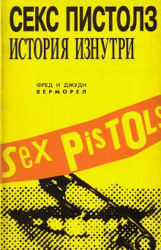

Второй абзац
Правда, когда я увидел Пистолз, я подумал, что я глубокий старик. А мне было 20, не больше, но по-чувствовал я себя на все 50. Я был в шоке. Точно, я сидел в углу, попивал Дабл Даймонд, гадая что же такое тут происходит — эти люди в ужасающей раскраске, драки и Бог знает что. И увидев их я полностью все передумал. Каждого они призывали к тотальному пересмотру его музыкальных взглядов, и внушали чув-ство, что и в твоей жизни музыка может сыграть какую-то особую роль. А ведь в последние годы этого чув-ства не было и быть не могло.
Третий абзац
Вот почему я связался со Stranglers, начал с того лета давать какие-то куски и фрагменты в прессу. И вот в октябре вдруг произошел взрыв и сцену заполонили люди из ниоткуда. Эти бэнды, такие как Vibrators, The Clash, The Damned, они сколачивались за неделю. Вдруг в Лондоне заиграло около 50 панк-команд — большинство из них родилось за одну ночь. Конечно, не совсем за ночь. Все они были пацанами, которые слонялись без дела, не зная куда себя деть.
